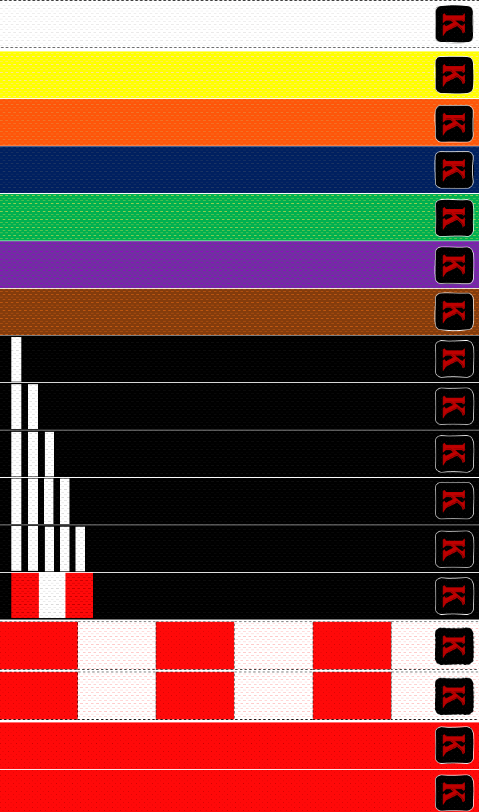

Associação Washi-Kan Karate-Do Shorin-Ryu
Associação Washi-Kan Karate-Do Shorin-Ryu


 Associação Washi-Kan Karate-Do Shorin-Ryu
Associação Washi-Kan Karate-Do Shorin-Ryu
-A Washi-Kan (academia da águia) foi fundada em 1993 pelo Sensei Caio Schiavom, na cidade de Rio Das Pedras /SP.
-
-O diretor técnico da Washi-Kan é o Sensei Antonio Carlos Schiavom, o Caio, graduado faixa coral 7º Dan de karatê e faixa preta 3º Dan em kobu-Dô.
-É o primeiro e único riopedrense a conquistar o título de 7º Dan
-O Sensei Caio possui 40 anos de treinamento e 28 anos como professor de karatê, teve mais de 3 mil alunos.
-A Washi-Kan acredita que o karatê é uma ferramenta potencializadora que desenvolve a elasticidade, o reflexo, a criatividade e a segurança pessoal do praticante, além de estar envolvida com razões que incluem o respeito, a justiça, a união, a humildade, entre outros.
-A Washi-Kan tem especialidade em receber alunos com difículdades de coordenação motora, com déficit de atenção, com sobrepeso, com problemas de socialização, alunos hiperativos, entre outros.
-A academia pratica uns dos estilos mais antigos do karatê, o Shorin-Ryu, fundado oficialmente no século XIX em Okinawa (Japão) pelo Mestre Chonshin Chibana.
-O estilo Shorin-Ryu chegou ao Brasil em 1954 atráves do Mestre Yoshihide Shinzato, o qual fundou a escola Shinshukan, uma das maiores escolas de karatê do mundo.
-A Washi-Kan e outras 200 academias de 7 países segue os padrões Shinshukan de karatê.
-A equipe de competição da Washi-Kan é referência, coletivamente a academia é hexacampeã do circuito ACAK, sendo 1ª colocada nos anos de 2001, 2002, 2003, 2004, 2010 e 2011.
-Indivídualmente os atletas da Washi-Kan consquistaram inumeras medalhas. Muitos representando o estado de São Paulo e o Brasil nas competições de nível nacional e internacional.
-Os horários de atendimento da Washi-Kan é das 13:30 h até 20:00 h de Seg à Qui e das 13:30 h até 18:00 h de Sex.
-Você também pode entrar em contato via telefone (19) 3493-1245 ou whatsapp (19) 99754-3966.
-O karatê é uma arte marcial que surgiu no Japão, mais precisamente na ilha de Okinawa, como uma luta de defesa contra os ataques de bandidos, que eram atraídos pela exuberância e comércio do local.
-No início do século XV, o uso de armas (espadas) era expressamente proibido nessa região, pois a ilha estava completamente habitada por samurais e sob a posse de fidalgos japoneses.
-Muitos desses samurais eram imigrantes da China e tinham o conhecimento em outras lutas. Assim, em razão da proibição de armas, os habitantes sentiram a necessidade de elaborar uma maneira de se defender usando apenas o corpo.
-O ensino do karatê moderno divide-se em: kihon (técnicas básicas), kata (sequência de técnicas, simulando luta com várias aplicações práticas) e kumitê (combate propriamente dito).
-Muitos filmes e séries apresentaram técnicas da modalidade como Karatê Kid e Cobra Kai ou tiveram as técnicas representadas nas telas com atores como Chuck Norris e Jean Claude Van Damme.
-Um dos karatecas mais famosos do Brasil é Lyoto Machida, ex-campeão dos meio-pesados do UFC.
-A faixas são indicadores do estágio do praticante no karatê, no estilo Shorin-Ryu existem 17 faixas.
